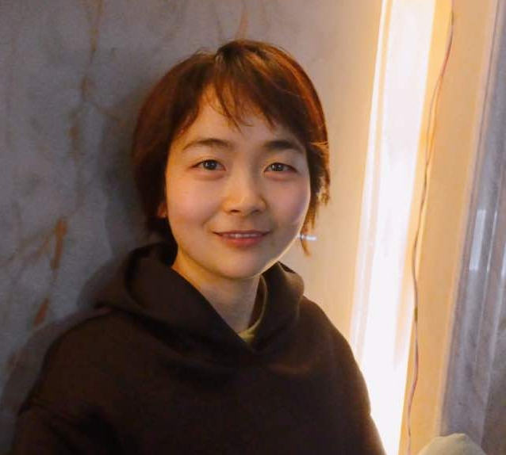
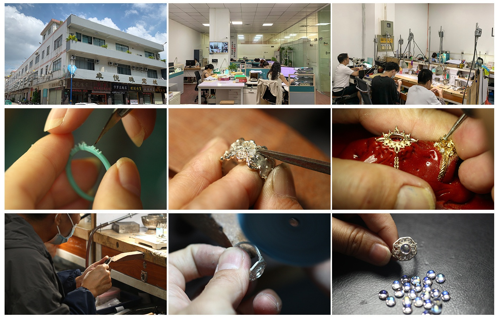

Meaningful custom jewelry, guided with clarity from idea to reality.
FashionHaydee was built for clients who want more than a generic ring or a standard jewelry order. I help turn ideas, references, stories, and sentimental details into custom jewelry that feels personal, wearable, and well considered.
My work is not only about how a piece looks in the end. It is also about how it is guided from the beginning—how the design is clarified, how materials are chosen, how practical decisions are made, and how the final piece is delivered with less confusion and more trust.

Guided through a trusted Guangzhou-based studio and workshop network, each piece moves from idea to practical execution with clarity and care.
For many clients, the hardest part is not deciding that they want custom jewelry. It is knowing where to begin.
Some start with a sketch. Some only have a saved image, a gemstone idea, or an old piece they want to redesign. Some are unsure about metal options, stone choices, durability, or budget. My role is to guide that process clearly—helping each project move from inspiration to practical decisions, from design direction to production, and from uncertainty to a finished piece that feels right.
You do not need to know jewelry terms before reaching out. I help turn loose ideas into workable direction.
Gemstones, metals, proportions, and details are discussed based on meaning, wearability, and budget.
Each custom piece is guided through a trusted Guangzhou-based studio and workshop network with attention to detail and final delivery.
I started FashionHaydee because jewelry, to me, has always felt like more than decoration. A ring or pendant can hold memory, symbolism, turning points, and parts of a story that are difficult to express in ordinary words.
What interests me most is not only beauty, but meaning that can be worn. That is why I am drawn to custom work—because the most memorable pieces usually begin with something personal.
FashionHaydee is best suited for clients who value thoughtful guidance, meaningful design, and custom work that balances beauty with practicality.
Ideal if you want a ring or jewelry piece built around a memory, a relationship, a personal reference, or a design idea.
Especially useful if you need help choosing gemstones, materials, or the right design direction before production begins.
Best for clients who are open to custom production in China with clear communication and realistic expectations.
Whether you already know what you want, or only have a starting point, I can help you shape it into a custom piece with more clarity and less guesswork.